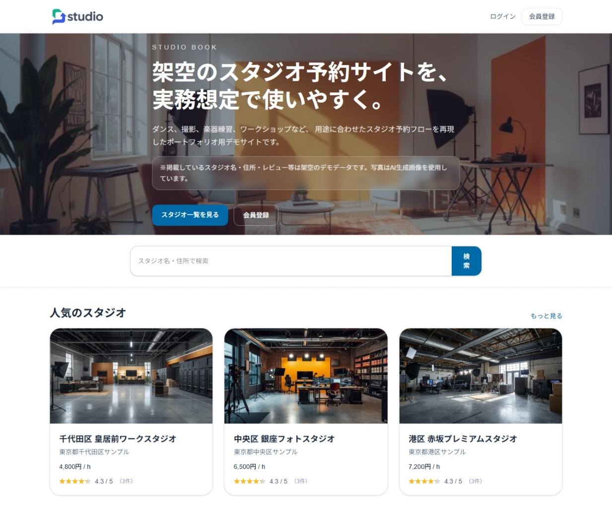
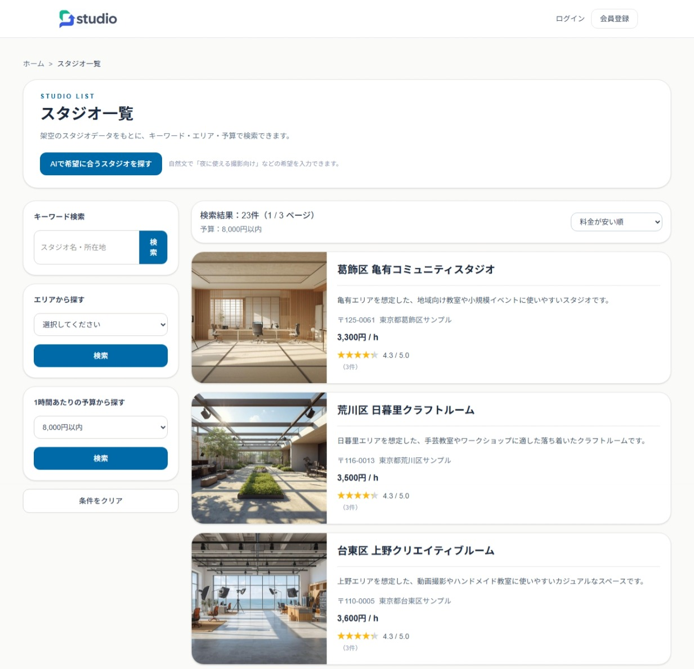
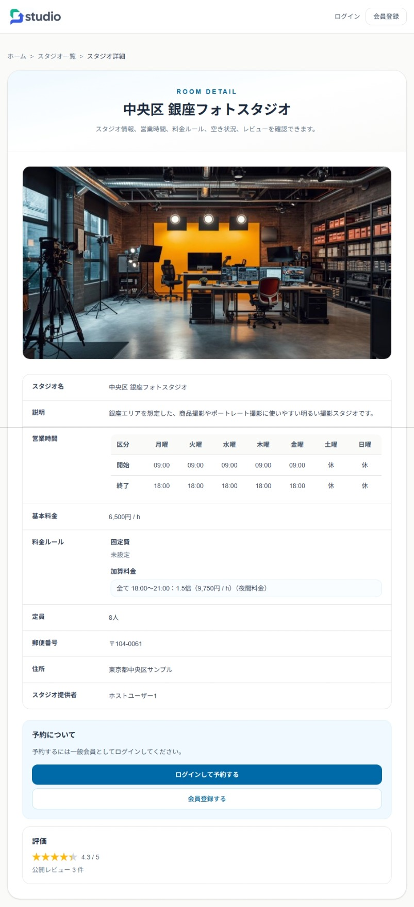
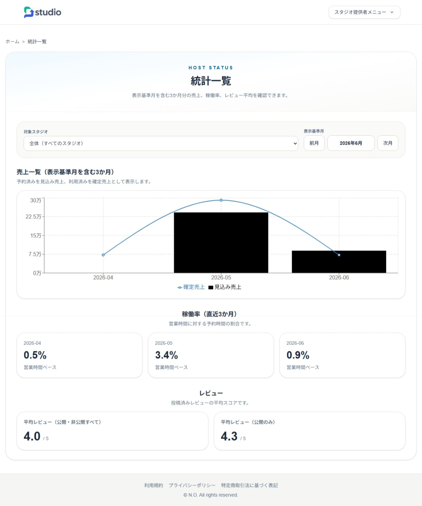
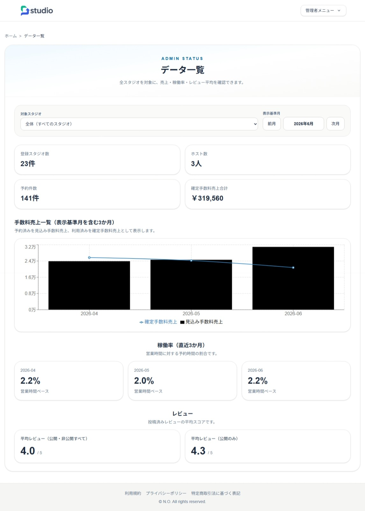

バックエンド
- C# / ASP.NET Core（.NET 8 / Web API）
- Entity Framework Core
- JWT Bearer認証 / ロール認可（GeneralUser / Host / Admin）
- Stripe API / Webhook（決済結果反映）
- QuestPDF（PDF出力）
- OpenAI API連携（AI検索・レビュー補助）
ASP.NET Core API と Next.js による、スタジオ時間貸し予約の業務想定Webアプリです。
一般ユーザー、ホスト、管理者の3ロール構成で、
スタジオ検索、予約、Stripe決済、売上管理、レビュー、営業時間・休館日・料金ルール管理、
CSV/PDF出力、AI検索までを実装しています。
Java / Spring Boot 版で作成した予約業務の構成をもとに、
API分離、管理機能、テスト、CI/CD、クラウドデプロイを含む、
より実務に近い構成へ発展させました。
※フロントエンドは Azure Static Web Apps、バックエンド API は Heroku 上で動作する構成です。
※デモ環境の状態により、初回アクセス時に起動待ちやAPI応答待ちが発生する場合があります。
※掲載しているスタジオ・ユーザー・予約データは、すべて架空の検証用データです。
※決済連携は Stripe の Test Mode を使用しており、実際の請求は発生しません。

代表的な画面をいくつか抜粋しています。
一般ユーザー、ホスト、管理者それぞれの業務フローを想定して実装しています。

キーワードや条件に応じてスタジオを検索し、料金・所在地・レビュー情報を確認できます。 AI検索では、自然文によるスタジオ検索も想定しています。

営業時間、休館期間、既存予約、時間帯別料金をバックエンドで検証し、 Stripe Checkoutへ連携します。決済完了後はWebhookを受信し、 支払金額と再計算結果を照合したうえで予約と料金明細を登録します。

ホストが管理するスタジオについて、直近3か月の売上、稼働率、レビュー平均を確認できる画面です。 スタジオ別の絞り込みや表示月の切り替えに対応し、運営状況を可視化しています。

管理者が全スタジオを対象に、登録数、ホスト数、予約件数、手数料売上、稼働率、レビュー平均を確認できる画面です。 サービス全体の利用状況と収益状況を把握するためのダッシュボードとして実装しています。
※本ページの「主な機能」は ASP.NET Core / Next.js 版で実装した内容です。
※Java / Spring Boot 旧版で整理した予約業務をもとに、API分離・管理画面・CI/CD・ドキュメントを強化しています。
フロントエンドとバックエンドを分離し、 Next.js から ASP.NET Core Web API を呼び出す構成にしています。 認証はJWTを利用し、一般ユーザー、ホスト、管理者のロールに応じて 利用できる画面・APIを分けています。
Next.js Frontend
→ ASP.NET Core Web API
→ Service Layer
→ EF Core
→ MySQL
Stripe Webhook
→ Reservation / Charge Items RegistrationREADME、ER図、画面構成図、認証フロー、予約・決済フローなどを GitHub上のドキュメントとして整備しています。
テスト・CI/CD・デプロイ構成は、READMEおよび docs 配下の構成図に整理しています。
Java / Spring Boot 版は初期学習・比較実装版として残し、 現在は本ページの ASP.NET Core / Next.js 版を主力成果物として掲載しています。
デモサイト、ソースコード、旧Java版は下記からご覧いただけます。
デモサイト：
https://gray-bush-08e107700.7.azurestaticapps.net/
GitHub リポジトリ：
https://github.com/fewioaghwrao/studio-book-dotnet-next
Java / Spring Boot 旧版：
Studio Book Java / Spring Boot 版を見る